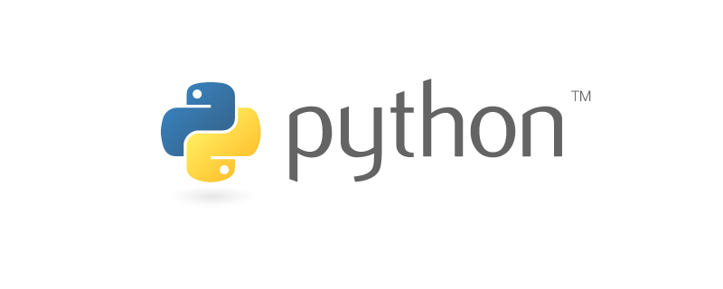

2020年python学习进阶方向原文出处:本文由博客园博主.Ronin提供。
原文连接:https://www.cnblogs.com/heyue0117/p/12106808.html
相信很多友人在学习python过程都会遇到很多 虽然python入门很容易 但是难免会遇到瓶颈 遇到问题没人交流 很难提升
对此 给你们简单指点学习方向

1.认识python linux基本结构 语法 变量 函数和模块的使用 字符串和常用数据结构 面向对象编程 图形用户界面和游戏开发
2.进阶 Flasl框架 路由及视图 模版 数据库 Django框架 redis数据库深入 包涵中间件 前后端分离 RESTfu1架构和DRF
3 .web网页开发
4.网络爬虫 Scrapy爬虫框架
5.大数据及AI概括数据分析处理可视化和人工智能分类实现
相应的基础入门以及进阶的资料可以点击下发链接加入交流群获取，群内都是学习python的友人。也希望大家能一起学习进步。更好的提升自己的能力。有一个明确的学习方向！